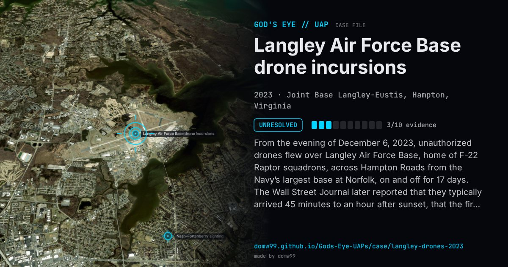

Langley Air Force Base drone incursions

From the evening of December 6, 2023, unauthorized drones flew over Langley Air Force Base, home of F-22 Raptor squadrons, across Hampton Roads from the Navy’s largest base at Norfolk, on and off for 17 days. The Wall Street Journal later reported that they typically arrived 45 minutes to an hour after sunset, that the first was about 20 feet long and flew at 3,000 to 4,000 feet, and that a dozen or more smaller drones followed. The Pentagon confirmed the incursions in October 2024. Gen. Glen VanHerck, who led NORAD at the time, later said the military had warned for years that it was not ready for this threat; he gave no new details about who was operating the drones.
Explanation
The Pentagon confirmed the incursions in October 2024 and said the drones did not appear to show hostile intent, but neither it nor NORAD has said who flew them.
What was seen
Shape: Drones of several sizes; the first reportedly about 20 ft long
Witnesses: Base personnel and U.S. military officials
Duration: Seventeen days
Sources
- WHRO — The Pentagon confirmed a swarm of drones violated Langley airspace (2024)
- The War Zone — Former NORAD boss wasn’t surprised by Langley AFB drone incursions
Browse
- United States
- 2020s
- Unresolved
- Military encounters
- Official government documents
- Military witnesses
- Formations and rows of lights